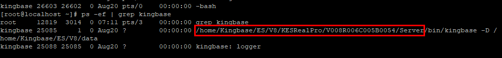
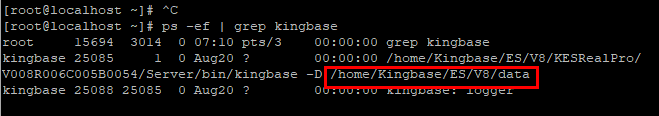

Before the backup, prepare related information by following instructions in Table 1.

- Unless otherwise specified, this section uses Linux localhost.localdomain 2.6.32-431.el6.x86_64 and Kingbase V8.0 as an example. The operations may vary according to the operating system or database version.
- If the Kingbase database is deployed in a cluster, you need to log in to all hosts where the cluster instances reside and perform the following operations unless otherwise specified.
Table 1 Preparing for the Backup
Item |
How to Obtain |
To Be Used In |
Username |
To query the database username, perform the following steps:
- Use PuTTY to log in to the host where the Kingbase database resides.
- Run the following command to query the Kingbase database installation username. The database port is set by the user during database registration. The default port number is 54321.
ss -ntlp | grep Database port The command output similar to the following is displayed, in which kingbase indicates the database username: users:(("kingbase",25085,4))
LISTEN 0 128 *:54321 *:* users:(("kingbase",25085,3))
|
Step 2: Registering the Database of a Single Kingbase Instance Step 3: Registering the Database of a Kingbase Cluster Instance |
Database Installation Path |
- Use PuTTY to log in to the host where the Kingbase database resides.
- Run the following command to check the installation path of the Kingbase database:
ps -ef | grep kingbase The command output of a single-node instance is as follows.  The command output of a cluster instance is as follows. 
|
Service Plane IP Address |
- Use PuTTY to log in to the host where the Kingbase database resides.
- Obtain the value of the listen_addresses field.
- Run the following command to view the data directory of the Kingbase database:
ps -ef | grep kingbase The command output of a single-node instance is as follows.  The command output of a cluster instance is as follows. 
- Run the following command to go to the data directory of the Kingbase database:
cd /opt/Kingbase/ES/V8/data
- Run the following command to open the kingbase.conf file:
vim kingbase.conf
- Run the following command to search for the line where listen_addresses is located:
/listen_addresses The command output is as follows. 
NOTE:
- If the value is *, use the IP address for logging in to the database background.
- If the value is an IP address, use any IP address in the value of listen_addresses for a single-node system or the active node IP address in the value of listen_addresses for a cluster.
|